Movement
Player movement and jumping were implemented through Unity physics and custom scripts, including a double-jump mechanic.
Selected Academic Work · 2024–2026
Unity · Interactive Media · Generative AI · 3D Animation · Physical Computing
A selection of experimental and technical projects exploring interaction beyond conventional interface design — from a Unity mobile game and AI-assisted multimedia to 3D animation and sensor-driven audiovisual experiences.

Focus
Interactive & Emerging Technology
Work
Games · AI Media · 3D · Physical Computing
Context
Selected University Projects
Tools
Unity · Maya · LTX Studio · DaVinci Resolve · Arduino · Max/MSP
Nature Dash · Unity
Nature Dash is a 3D mobile game developed in Unity, combining interaction design, gameplay mechanics and user-centred design principles.
Created for my Virtual & Augmented Reality Design module, I chose to develop a mobile experience that prioritised accessibility, usability and responsive interaction rather than requiring specialist hardware.
The game places the player in a nature-themed obstacle course where movement, jumping, coin collection, collisions and feedback work together to create a simple but responsive gameplay loop.
Gameplay Demo
The final demo brings together the environment, character movement, collision handling, collectible coins, animation, sound and scene transitions.
Interaction & Development
The project required me to think about both what the player sees and what happens underneath the interface. I developed movement and jumping behaviour, collision responses, collectibles and scene management while continually considering clarity and feedback.
Player movement and jumping were implemented through Unity physics and custom scripts, including a double-jump mechanic.
Coins, sound, animation and collision responses give the player immediate feedback as they move through the game.
A nature-led 3D environment creates a consistent visual setting while obstacles establish the gameplay challenge.
Visibility, consistency, user control, error prevention and feedback informed interaction decisions throughout.
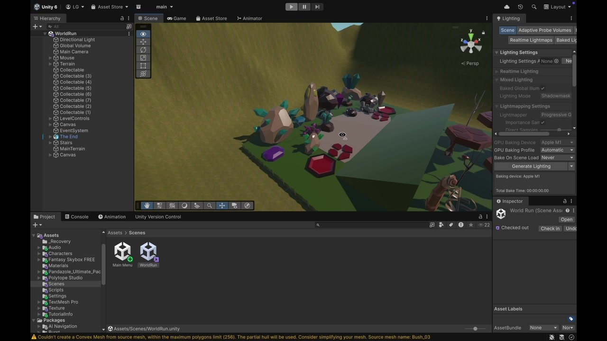
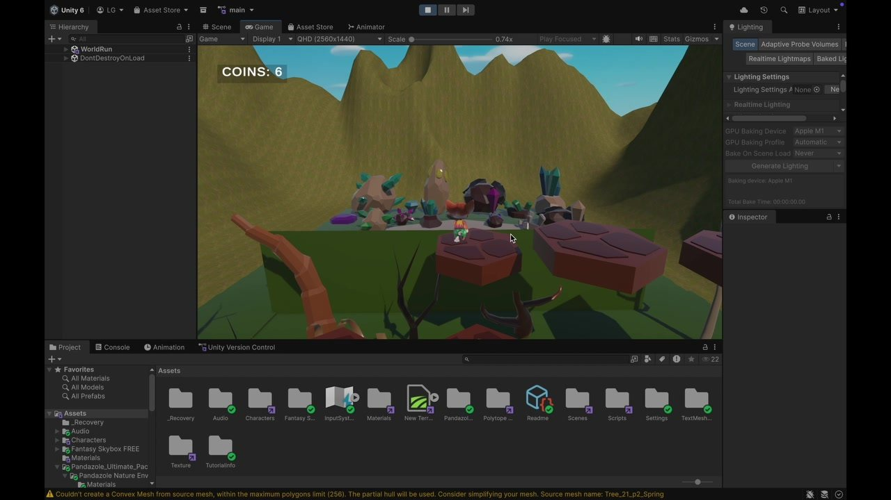
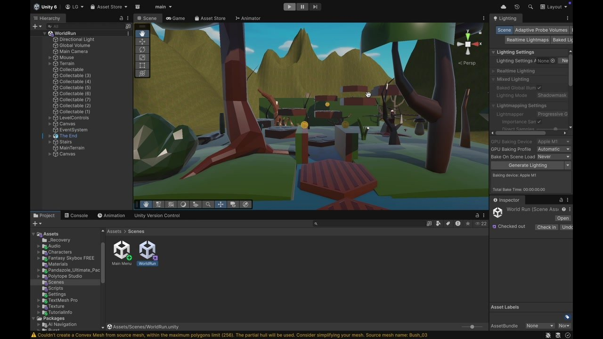
The project combined my own Unity development with selected third-party assets and learning resources, including Mixamo and Unity asset resources.
Interactive Multimedia
Across a sequence of Interactive Multimedia assignments, I explored AI as both a creative tool and a subject for critical design. The work developed from an AI-assisted video into a speculative consumer product and wider research reflection.
The Cost of Convenience
An AI-assisted short video exploring the contrast between the seamless experience of AI and the physical infrastructure behind digital technology.
I experimented with ComfyUI and Fliki before moving to LTX Studio for greater control over visual direction, pacing, voiceover and narrative.
The sequence moves from calm natural imagery toward data centres and industrial scenes. I then used DaVinci Resolve to refine clips and transitions into the final short-form video.
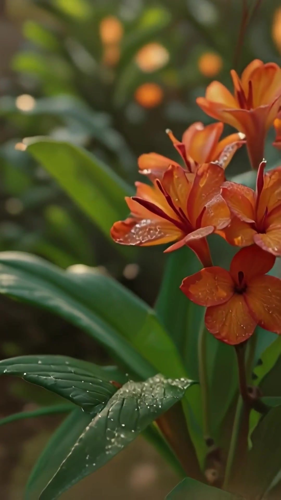
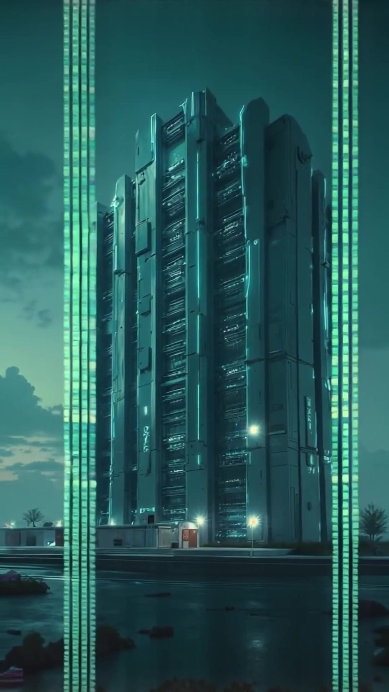
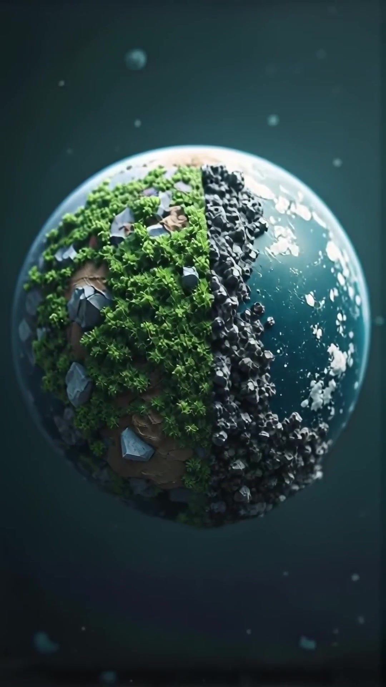
This project intentionally uses AI-generated imagery as part of its critical exploration of AI. Creative direction, narrative development and final video editing formed part of my process.
Developing the Theme · AI-llusion Beauty
AI-llusion Beauty extended the same theme into a conceptual AI-driven beauty brand. The proposal uses the familiar language of polished beauty marketing before disrupting the experience with information about the wider implications of AI technology.
The concept imagined QR-enabled packaging connecting the physical product to an AI beauty-filter experience and environmental messaging. The QR interaction and app experience remained conceptual rather than a fully implemented product.
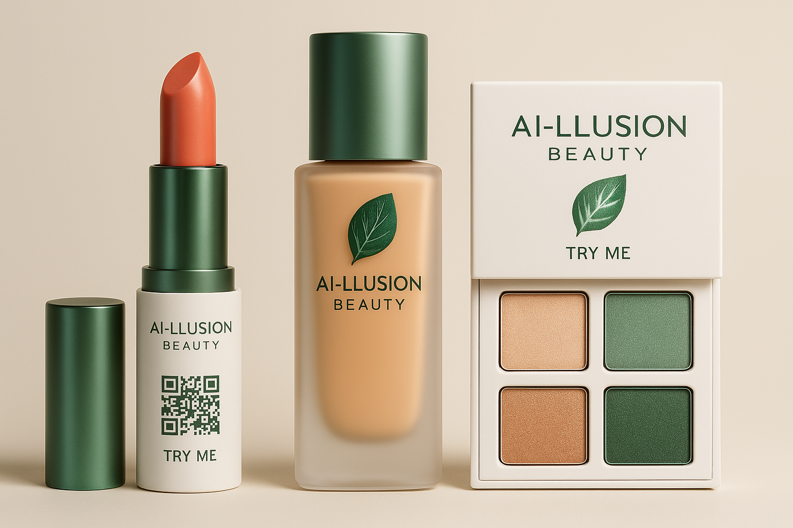
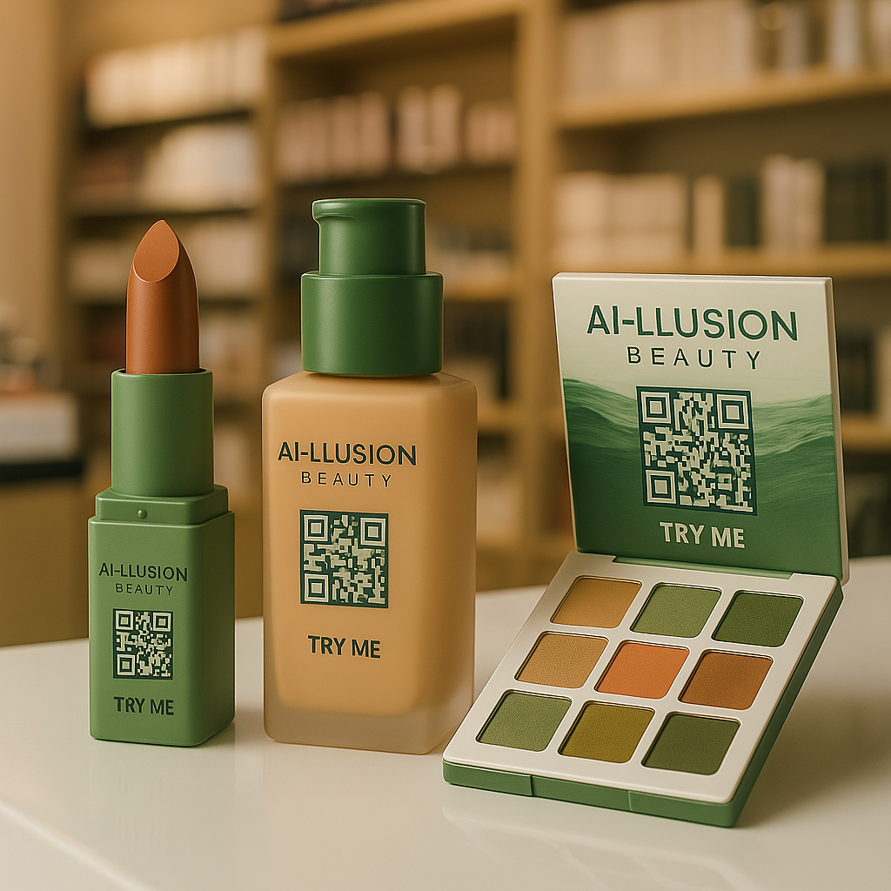
Digital Modelling & Animation · Maya
A 3D animation project exploring environmental modelling, materials, keyframe animation, lighting, cameras and rendered storytelling in Autodesk Maya.
I modelled environmental elements including the backdrop, ground, trees, bushes, rocks and fountain, then combined these with selected external assets to develop the final scene.
The project also involved keyframe animation, animation curves, camera positioning and lighting. Rendered sequences were assembled in DaVinci Resolve to produce the final animation.
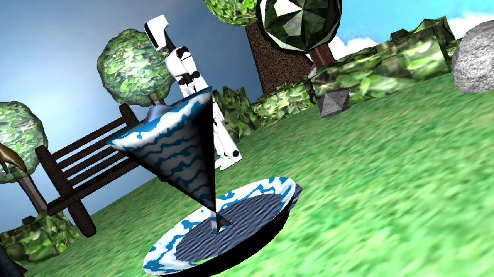
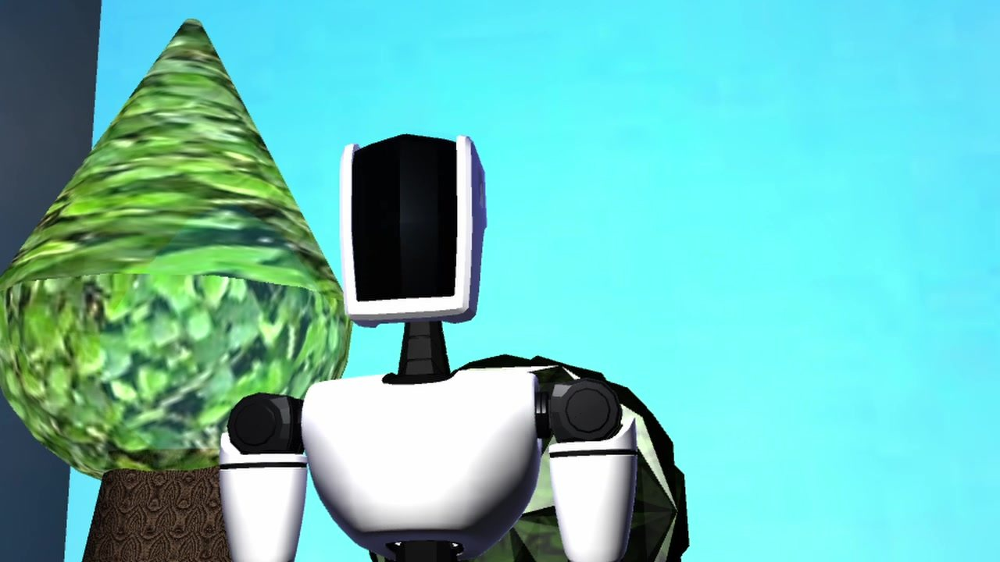
05 · Performance Technology
A collaborative physical-computing experiment using Arduino, sensors and Max/MSP to turn live input into responsive audiovisual behaviour.
My contribution focused primarily on the Arduino coding and Max/MSP side of the project. We experimented with temperature and humidity sensing, tilt and an LED button, mapping sensor data to visual and audio responses.
The project gave me practical experience connecting hardware and software, testing sensor sensitivity and troubleshooting a real-time interactive system.
Collaborative university project. This section focuses on the technical areas I worked on directly.
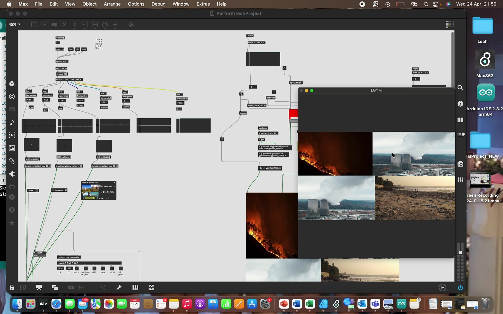
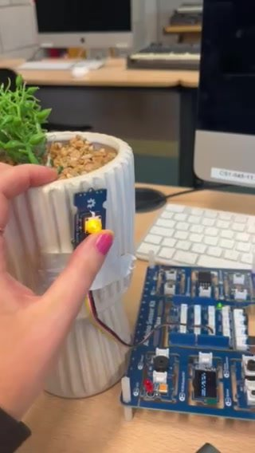
Physical Interaction Demo
06 · Reflection
These projects pushed me beyond screen-based UX and gave me experience designing with code, motion, generative tools, 3D environments and physical inputs.
Working across different technologies taught me to focus on the relationship between input, feedback and user experience regardless of the platform or tool.
They also strengthened my confidence in learning unfamiliar software, troubleshooting technical problems and combining creative direction with practical implementation.